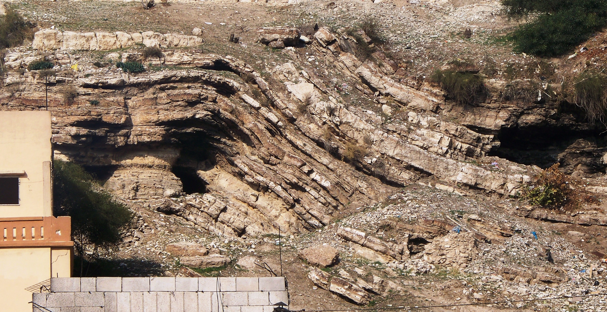

Sumando las edades de los patriarcas, algunos calcularon que la humanidad tenía unos seis mil años. La ciencia cuenta una historia con cinco ceros más. ¿De dónde viene cada cifra?
Esta serie toma los grandes relatos del principio de la Biblia —la creación, el diluvio, la torre de Babel, los patriarcas, el éxodo, la conquista— y los pone frente a lo que han encontrado la arqueología y la ciencia. No para "desmentir" la Biblia, sino para hacer algo más interesante: entender de dónde viene cada relato, qué mundo real refleja, y qué dicen las evidencias. Distinguiremos siempre lo que es consenso sólido de lo que está en debate. Y lo haremos con respeto: millones de personas encuentran sentido en estos textos, y explicar su origen histórico no busca quitarles valor, sino iluminarlos.
Empecemos por la pregunta más básica de todas: ¿cuánto tiempo lleva el ser humano sobre la Tierra?
La cifra no está escrita como tal en la Biblia. Surge de sumar cronologías: las genealogías del Génesis, que dan las edades de los patriarcas desde Adán, encadenadas con el resto de datos cronológicos del texto. El cálculo más famoso lo hizo en el siglo XVII el arzobispo irlandés James Ussher, que fijó la creación del mundo en el año 4004 a.C. Sumando desde ahí, la humanidad tendría unos seis mil años.
Es un trabajo erudito y meticuloso para su época. El problema no es el cálculo en sí, sino su punto de partida: supone que las genealogías del Génesis son un registro cronológico completo y literal, pensado para medir el tiempo. Y hay buenas razones para dudar de que fueran escritas con esa intención, como veremos en un episodio próximo dedicado a esas edades imposibles.
Los "seis mil años" no aparecen escritos en la Biblia: son el resultado de sumar las edades de los patriarcas. El arzobispo Ussher hizo la cuenta más célebre en 1650 y llegó al año 4004 a.C. como fecha de la creación.
La ciencia aborda la pregunta de otra manera: no sumando textos, sino midiendo —fósiles, capas de roca, isótopos radiactivos, ADN—. Y sus resultados no dejan lugar a un margen de miles: hablan de cientos de miles de años solo para nuestra especie, y de millones para nuestros antepasados.
El fósil de Homo sapiens más antiguo conocido procede de Jebel Irhoud, en Marruecos, y tiene unos 300.000 años —un hallazgo de 2017 que retrasó en cien mil años el origen de nuestra especie, que antes se situaba en torno a los 200.000—. Y si retrocedemos por la línea de nuestros parientes homínidos, llegamos a millones de años: los Australopithecus, como la famosa "Lucy", vivieron hace más de tres millones de años.
¿Por qué confiar en esas cifras? Porque no dependen de un solo método, sino de varios independientes que coinciden. La datación por radiocarbono sirve para restos de hasta unos 50.000 años. Para edades mayores se usan otros relojes isotópicos —potasio-argón, series de uranio, termoluminiscencia—, cada uno basado en la desintegración, a ritmo constante y medible, de elementos radiactivos. En Jebel Irhoud, por ejemplo, la edad se obtuvo por termoluminiscencia de herramientas de piedra quemadas.
A ello se suman la estratigrafía (las capas de roca se depositan en orden, las de abajo son más antiguas), la dendrocronología, los núcleos de hielo y sedimento, y la genética de poblaciones, que estima tiempos de divergencia a partir de las mutaciones acumuladas en el ADN. Todos apuntan en la misma dirección: un pasado humano inmensamente más largo que seis mil años.

Aquí conviene detenerse, porque el choque entre "seis mil años" y "trescientos mil" no es tanto una batalla de datos como un malentendido sobre qué pregunta responde cada fuente. Las genealogías del Génesis no se escribieron como un cronómetro geológico: son, entre otras cosas, un modo de ordenar la memoria, de conectar generaciones, de afirmar el lugar de un pueblo en el mundo. Leerlas como si fueran un manual de datación es pedirles algo que no pretendían dar.
La ciencia, por su parte, no dice nada sobre el sentido de la existencia humana; solo mide su antigüedad. Cuando se entiende que cada fuente responde a una pregunta diferente —una, el cuánto medible; otra, el quiénes somos y de dónde venimos en un sentido más hondo—, el conflicto se disuelve en buena medida. El problema aparece solo cuando se exige a una que haga el trabajo de la otra.
Las genealogías se leen como cronología exacta: la humanidad tendría unos 6.000 años, y los fósiles se reinterpretan como restos post-diluvianos de pocos miles de años.
Múltiples métodos independientes de datación sitúan a Homo sapiens en ~300.000 años y a sus ancestros en millones. No hay margen para una cifra de miles.
Lectura: la gran antigüedad del ser humano (cientos de miles de años) es consenso científico prácticamente absoluto, sostenido por métodos independientes que concuerdan. La cronología de "seis mil años" no tiene apoyo en la evidencia física; pertenece a una lectura literal de las genealogías, no a la ciencia.
La datación de Homo sapiens en ~300.000 años procede de los fósiles de Jebel Irhoud (Marruecos), publicados por Hublin y colaboradores en Nature (2017) y datados por termoluminiscencia por McPherron y su equipo. El consenso previo (~200.000 años) se basaba en los fósiles de Omo, en Etiopía.
La fecha de 4004 a.C. es la cronología de James Ussher (Annales Veteris Testamenti, 1650), un cálculo erudito basado en las genealogías bíblicas. Se presenta aquí como dato histórico del pensamiento, no como hipótesis científica en competencia.
Existe una postura de "Tierra joven" que reinterpreta las dataciones (por ejemplo, los materiales de organizaciones creacionistas). Esta serie la menciona con neutralidad y expone por qué la comunidad científica no la acepta: contradice la convergencia de múltiples métodos de datación independientes. El objetivo es describir el estado de la evidencia, no descalificar creencias personales.